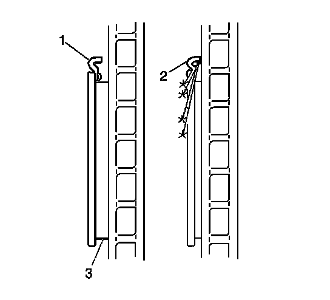

Brake Pad: Testing and Inspection
Brake Pad Inspection

Caution: Refer to Brake Dust Caution (Brake Dust Caution) .
* Inspect the disc brake pads at regular intervals, or whenever the tire and wheel assemblies are removed from the vehicle.
* If replacement is necessary, always replace disc brake pads in axle sets.
* Inspect both edges of the disc brake pad friction surfaces (3). The highest rate of wear normally occurs at the trailing edge of the disc brake pads.
* Inspect the thickness of the disc brake pads (3) in order to ensure that they have not worn excessively. The disc brake pad wear should be approximately even per axle set.
* Both front and rear disc brake pads have integral, audible wear sensors (1). When the disc brake pad wear reaches the minimum allowable thickness, the wear sensor contacts the disc brake rotor (2). The wear indicator will then produce an audible, high-pitched warning noise during wheel rotation.
* Replace the disc brake pads when the friction surface (3) is worn to within 1 mm (0.039 in) of the mounting plates.
* Remove the brake calipers and inspect the friction surfaces of the inner and outer disc brake pads to ensure that they are level. Place the disc brake pad friction surfaces together and measure the gap between the surfaces. If more than 0.5 mm (0.02 in) gap exists midway between the length of the disc brake pads, replace the disc brake pads.
* Verify that any disc brake pad shims that may be required are in place and not damaged or excessively corroded. Replace any missing or damaged shims in order to preserve proper disc brake performance.
* Replace the disc brake pads if any have separated from the mounting plates.
* Inspect the disc brake pads friction surfaces for cracks, fractures, or damage which may cause noise or otherwise impair disc brake performance.
* Inspect the noise insulators on the brake pad mounting plate. Replace the brake pads if the noise insulators have separated from the brake pad mounting plate.